Actividad 07 Lab: File path traversal simple case
Reporte Original
Reporte de Actividad Detallado incluyendo referencias // Extensión: .pdf
Introducción
Actividad en la cual se realiza el laboratorio File Path Traversal - Simple case. En este entorno, se intercepta la petición HTTP de una imagen y se modifica arbitrariamente el parámetro filename.
Clasificación
Path Traversal (CWE-22). Con el uso de secuencias de salto estándar (../../../etc/passwd), se evade la ruta base para leer archivos confidenciales, evidenciando la falta de validación.
Objetivo
Recuperar exitosamente el contenido de /etc/passwd manipulando el parámetro de carga. Confirmar obtención y registrar el estado de "Solved".
Mecanismo Interno y Teoría
> ¿Por qué ocurre?
Ocurre cuando el servidor concatena directamente la entrada del usuario con una ruta base sin aplicar validación canónica o filtros whitelist.
> Kernel Path Resolution
Virtual Backend Sandbox
Procedimiento Técnico Paso a Paso
Inicio de Proyecto Temporal
Apertura de Burp Suite Community Edition seleccionando la opción Temporary project in memory, ideal al no requerir persistencia de sesión.
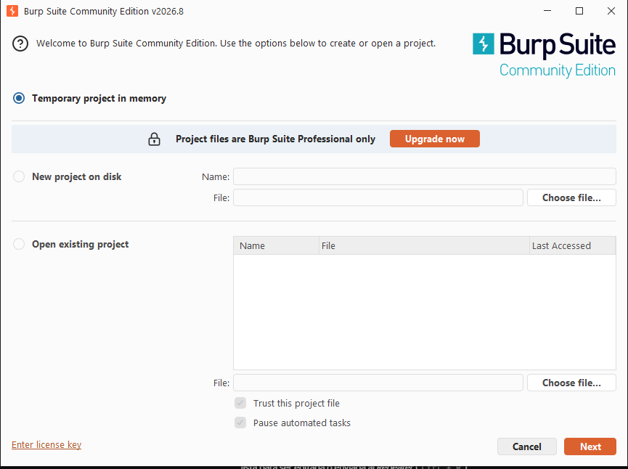
Configuración por Defecto
Se avanzó seleccionando Use Burp defaults para inicializar el análisis estándar del proxy.
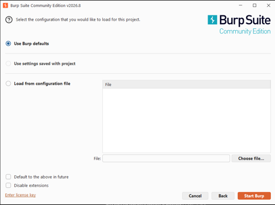
Apertura del Navegador Integrado
En la pestaña Proxy > Intercept, con la opción "Intercept is off", se ejecutó el botón Open browser.
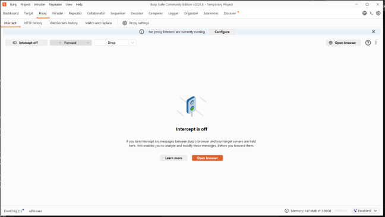
Navegador Preconfigurado
El navegador (Chromium) se inició listo para enrutar todo el tráfico hacia el proxy local de Burp Suite.
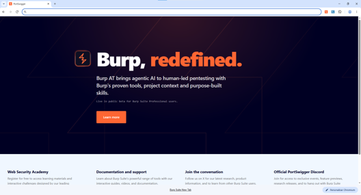
Acceso al Entorno Virtual
Desde PortSwigger se accedió a "File path traversal, simple case", instanciando el laboratorio temporal.
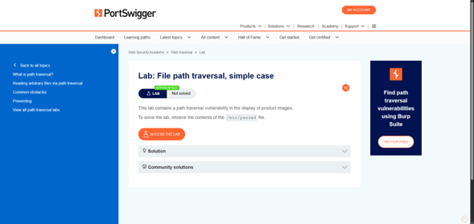
Retención de Primera Petición
Con Intercept is ON se atrapó la primera petición. Se dio "Forward All" para permitir la carga visual de la página web.
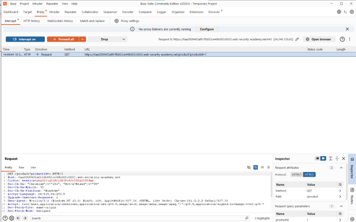
Despliegue del Catálogo
El catálogo "We Like To Shop" cargó correctamente en el navegador, mostrando todas las imágenes de los productos.
Selección del Producto
Se ingresó a "Robot Home Security Buddy" (View details). La página quedó incompleta a la espera de liberar el tráfico en Burp.
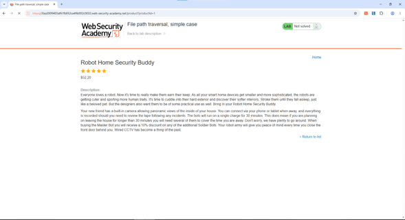
Tráfico de Imágenes Retenido
En el proxy se observó que la carga de imágenes generó una petición GET aislada hacia /image?filename=54.jpg.
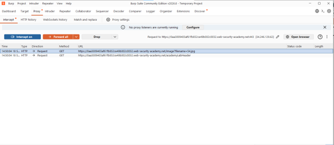
Renderizado de Endpoint
Al reenviar (Forward) las peticiones, la imagen cargó en la web, confirmando que la imagen depende exclusivamente de ese endpoint.
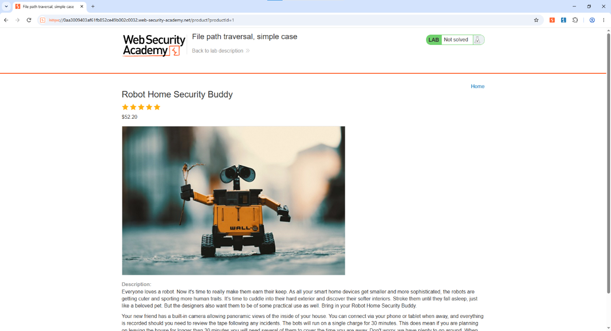
Recarga Principal Controlada
Regresando al Home, se mantuvo "Intercept on" para aislar el flujo inicial de carga de la web principal.
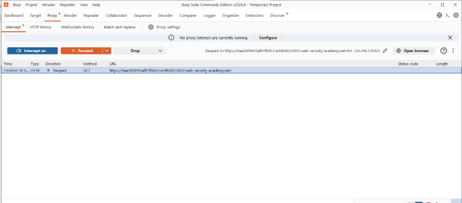
Confirmación del Vector
El Proxy evidenció un patrón masivo (filename=13.jpg, 30.jpg...). Esto confirmó que el parámetro es controlado por el usuario, siendo el vector idóneo de ataque.
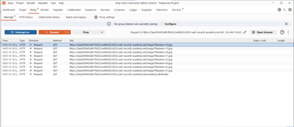
Aislamiento en Repeater
Se seleccionó la petición de la imagen (filename=54.jpg), enviándola al módulo Repeater para manipularla manualmente sin afectar la web.
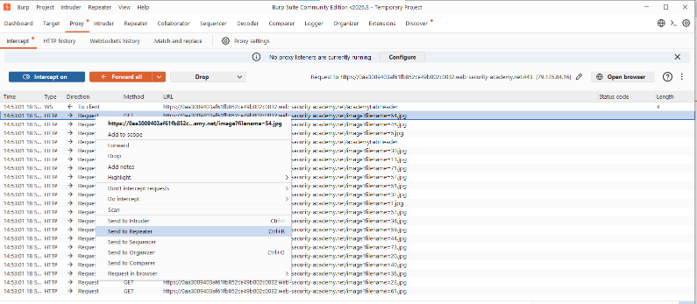
Test Base (Baseline)
La petición original se envió en Repeater, obteniendo 200 OK con el binario de imagen como respuesta estándar.
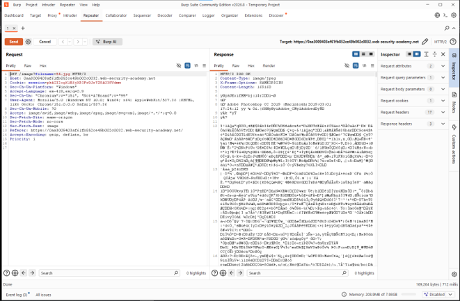
Intento Negativo
Se inyectó directamente la ruta /etc/passwd (sin secuencias de salto). El servidor bloqueó la solicitud con 400 Bad Request ("No such file").
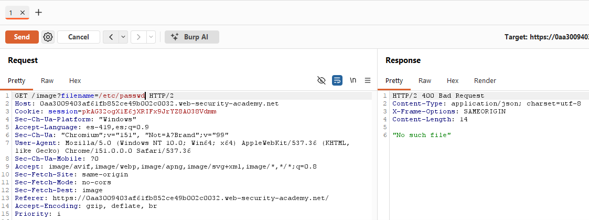
Explotación Exitosa
Se usó el payload ../../../../etc/passwd. El servidor procesó el retroceso y devolvió 200 OK volcando el contenido confidencial del sistema.
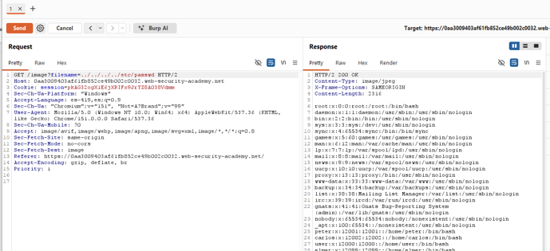
Validación Final
En el navegador, al actualizar, la plataforma cambió el estado de "Not solved" a Solved, certificando el éxito del ataque.
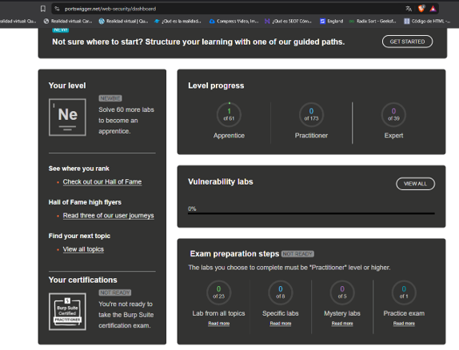
Análisis Estructural del Payload
| Componente | Función en Sistema Unix/Linux |
|---|---|
| ../ (x4) | Operador de Retroceso Relativo. Retrocede niveles en la jerarquía desde la carpeta de imágenes hasta asegurar alcanzar la raíz (/). Si sobran ../, Linux simplemente ignora el retroceso extra y se queda en la raíz. |
| etc/passwd | Ruta relativa hacia el archivo de gestión de usuarios de Linux. Al llegar al directorio raíz, el servidor web lee este archivo exitosamente. |
Mitigaciones Recomendadas (Defensa en Profundidad)
> 1. Canonicalización
Resolver la ruta absoluta usando realpath() y verificar estrictamente que comience con el prefijo autorizado.
> 2. Whitelisting Estricto
Permitir solo caracteres alfanuméricos y extensiones de imagen predefinidas, rechazando secuencias con barras o puntos.
> 3. Referencias Indirectas
Nunca exponer nombres de archivo reales al usuario. Servir imágenes mediante identificadores (UUID) mapeados en DB.
> 4. Menor Privilegio
Aislar los permisos del usuario ejecutor (www-data) para que no posea lectura sobre archivos fuera de la raíz web.
> 5. Sandboxing (Chroot)
Ejecutar el servidor web en contenedores mínimos (Docker) o jaulas chroot con un /etc/passwd inofensivo.
> 6. Monitoreo WAF
Habilitar reglas OWASP Core Rule Set en el WAF para bloquear patrones comunes de traversal como \.\./